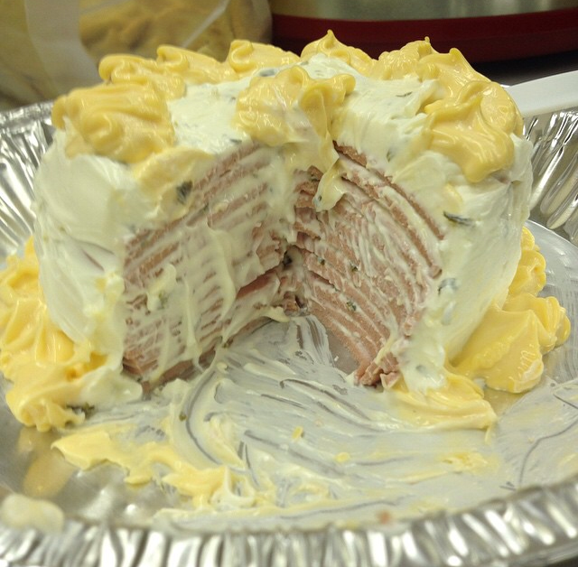

Back
Bologna Cake

Description:
This has everything nobody would ever want in a cake! It might be edible, but your palate would disagree. Treat yourself and your loved ones and watch their faces as you subject them to this faustian culinary experience.
Ingredients: (serves 6-8)
- 2 pkg. (8 oz.) softened cream cheese
- 1 pkg. (1 oz.) Hidden Valley Ranch Dressing
- 12 oz. (weight) Oscar Mayer bologna
- 1 can (8 oz.) sharp cheddar aerosol cheese
- 1 whole sprig of cilantro or pimento-stuffed olives (for garnish)
- 1 pkg. buttery crackers, (Townhouse or Ritz)
Procedure: (approx. 15 mins)
- Mix ranch dressing into softened cream cheese, set aside.
- Place one slice of bologna on a plate and frost with 1 tbsp of cream cheese mixture.
- Repeat, stacking slices on top of each other to form the cake.
- Use any remaining cream cheese to frost the outside of the cake.
- Pipe cake flowers with aerosol cheese around the bottom and top of the cake to decorate.
- Finish decorating the top with the sprig of cilantro, or pimento-stuffed olives.
- When serving, cut a small slice and garnish with a wedge of buttery cracker.
- Try to enjoy!
Back